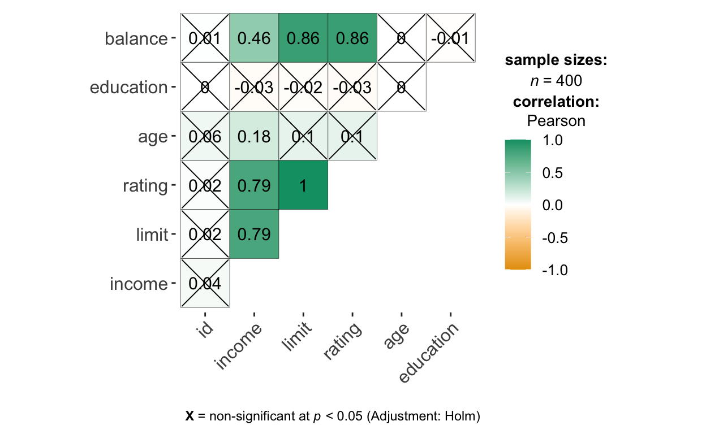

Applied Exercise for Chapter 3
Chapter overview - Linear regression
Linear regression can be used to explain the below:
Is there a relationship between X and Y? Is the relationship a slope, or just a random line? (Look at the slope, the confidence interval the t-statistic/F statistic, the p-value)
How strong is the relationship between X and Y? - how much of the variace may be explained using R-sq?
Which X contribute to Y? (check p-values)
How accurately can we estimate the effect of each X and Y? (Look at the r-square, which tells about the about of variation that can be explained)
How accurately can we predict future Y? (Look at the confidence interval, look at residual standard error - how much predicted Y would differ from true Y even if model is correct)
How large is the effect of each X on Y? (Look at the confidence intervals, from the standard error of slope. If the CI includes zero, then the variable is not statistially significant. )
Is the relationship linear?
Are there interactions among X variables?
Interpreting linear regression results
Linear regression:
The null hypothesis is that there is no relationship between X and Y.
The alternative hypothesis is that there is some relationship between X and Y.
The t-statistic measures the number of standard deviations that the estimated coefficient (slope) is away from zero. If the p-value is small, the null hypothesis can e rejected (there is relationship between X and Y).
The F-statistic will be close to 1 if there is no relationship between X variables and Y variable (null hypothesis). If the alternative hypothesis, ie there is relationship between X and Y variables, then F will be larger than 1.
Using dummy variables to carry out regression for categorical predictor X variables.
Hierarchical Principle: if we include an interaction effect, we should also include the main effects, even if the p-values are not significant for the main effect coefficients.
What to watch out for:
Non-linearity of response-predictor relationships (always check with visualization)
Collinearity (check using car::vif)
Outliers
High-leverage points
Whether normality assumptions are met
Correlation of error terms (usually occurs in time-series data)
Regression assumptions (Taken from sthda website, link under Resources:
- Linearity of data - No outliers, high leverage points
- Normality of residuals
- Homogeneity of residuals variance – Homoscedasticity
- Independence of residuals error terms
Plots can be generated using ggfortify::autoplot(linear model)
Comparing two models using anova()
Null hypothesis: both models perform equally well Alternative hypothesis: there is a difference between both models
What can be extracted from lm equation in R:
Using names(model):
- coefficients
- residuals
- effects
- rank
- fitted.values
- assign
- qr
- df.residual
- xlevels
- call
- terms
- model
To extract confidence intervals for coefficient estimates:
- confint(model) command
To predict y:
- predict(model,
)
Packages
Data - Advertising (Numerical Xs)
advertising <- read_csv("https://book.huihoo.com/introduction-to-statistical-learning/Advertising.csv") %>%
clean_names() %>%
select(-x1)
glimpse(advertising)
Rows: 200
Columns: 4
$ tv <dbl> 230.1, 44.5, 17.2, 151.5, 180.8, 8.7, 57.5, 120.2,…
$ radio <dbl> 37.8, 39.3, 45.9, 41.3, 10.8, 48.9, 32.8, 19.6, 2.…
$ newspaper <dbl> 69.2, 45.1, 69.3, 58.5, 58.4, 75.0, 23.5, 11.6, 1.…
$ sales <dbl> 22.1, 10.4, 9.3, 18.5, 12.9, 7.2, 11.8, 13.2, 4.8,…# Exploratory
summary(advertising)
tv radio newspaper sales
Min. : 0.70 Min. : 0.000 Min. : 0.30 Min. : 1.60
1st Qu.: 74.38 1st Qu.: 9.975 1st Qu.: 12.75 1st Qu.:10.38
Median :149.75 Median :22.900 Median : 25.75 Median :12.90
Mean :147.04 Mean :23.264 Mean : 30.55 Mean :14.02
3rd Qu.:218.82 3rd Qu.:36.525 3rd Qu.: 45.10 3rd Qu.:17.40
Max. :296.40 Max. :49.600 Max. :114.00 Max. :27.00 skimr::skim(advertising) # newspaper is a bit skewed, no missing values
| Name | advertising |
| Number of rows | 200 |
| Number of columns | 4 |
| _______________________ | |
| Column type frequency: | |
| numeric | 4 |
| ________________________ | |
| Group variables | None |
Variable type: numeric
| skim_variable | n_missing | complete_rate | mean | sd | p0 | p25 | p50 | p75 | p100 | hist |
|---|---|---|---|---|---|---|---|---|---|---|
| tv | 0 | 1 | 147.04 | 85.85 | 0.7 | 74.38 | 149.75 | 218.82 | 296.4 | ▇▆▆▇▆ |
| radio | 0 | 1 | 23.26 | 14.85 | 0.0 | 9.97 | 22.90 | 36.52 | 49.6 | ▇▆▆▆▆ |
| newspaper | 0 | 1 | 30.55 | 21.78 | 0.3 | 12.75 | 25.75 | 45.10 | 114.0 | ▇▆▃▁▁ |
| sales | 0 | 1 | 14.02 | 5.22 | 1.6 | 10.38 | 12.90 | 17.40 | 27.0 | ▁▇▇▅▂ |
advertising %>%
ggcorrmat()
advertising %>%
ggpairs()
# to filter correlation r values if needed
advertising %>%
as.matrix(.) %>%
Hmisc::rcorr(.) %>%
tidy(.) %>%
as_tibble()
# A tibble: 6 × 5
column1 column2 estimate n p.value
<chr> <chr> <dbl> <int> <dbl>
1 radio tv 0.0548 200 0.441
2 newspaper tv 0.0566 200 0.426
3 newspaper radio 0.354 200 0.000000269
4 sales tv 0.782 200 0
5 sales radio 0.576 200 0
6 sales newspaper 0.228 200 0.00115
Call:
lm(formula = sales ~ tv, data = advertising)
Residuals:
Min 1Q Median 3Q Max
-8.3860 -1.9545 -0.1913 2.0671 7.2124
Coefficients:
Estimate Std. Error t value Pr(>|t|)
(Intercept) 7.032594 0.457843 15.36 <2e-16 ***
tv 0.047537 0.002691 17.67 <2e-16 ***
---
Signif. codes: 0 '***' 0.001 '**' 0.01 '*' 0.05 '.' 0.1 ' ' 1
Residual standard error: 3.259 on 198 degrees of freedom
Multiple R-squared: 0.6119, Adjusted R-squared: 0.6099
F-statistic: 312.1 on 1 and 198 DF, p-value: < 2.2e-16
Call:
lm(formula = sales ~ radio, data = advertising)
Residuals:
Min 1Q Median 3Q Max
-15.7305 -2.1324 0.7707 2.7775 8.1810
Coefficients:
Estimate Std. Error t value Pr(>|t|)
(Intercept) 9.31164 0.56290 16.542 <2e-16 ***
radio 0.20250 0.02041 9.921 <2e-16 ***
---
Signif. codes: 0 '***' 0.001 '**' 0.01 '*' 0.05 '.' 0.1 ' ' 1
Residual standard error: 4.275 on 198 degrees of freedom
Multiple R-squared: 0.332, Adjusted R-squared: 0.3287
F-statistic: 98.42 on 1 and 198 DF, p-value: < 2.2e-16
Call:
lm(formula = sales ~ newspaper, data = advertising)
Residuals:
Min 1Q Median 3Q Max
-11.2272 -3.3873 -0.8392 3.5059 12.7751
Coefficients:
Estimate Std. Error t value Pr(>|t|)
(Intercept) 12.35141 0.62142 19.88 < 2e-16 ***
newspaper 0.05469 0.01658 3.30 0.00115 **
---
Signif. codes: 0 '***' 0.001 '**' 0.01 '*' 0.05 '.' 0.1 ' ' 1
Residual standard error: 5.092 on 198 degrees of freedom
Multiple R-squared: 0.05212, Adjusted R-squared: 0.04733
F-statistic: 10.89 on 1 and 198 DF, p-value: 0.001148# Backward selection for important variables
# Putting all the X variables in the equation and then removing the non-significant
mod_4 <- lm(sales ~ tv + radio + newspaper, data = advertising)
summary(mod_4) # newspaper is not a significant predictor
Call:
lm(formula = sales ~ tv + radio + newspaper, data = advertising)
Residuals:
Min 1Q Median 3Q Max
-8.8277 -0.8908 0.2418 1.1893 2.8292
Coefficients:
Estimate Std. Error t value Pr(>|t|)
(Intercept) 2.938889 0.311908 9.422 <2e-16 ***
tv 0.045765 0.001395 32.809 <2e-16 ***
radio 0.188530 0.008611 21.893 <2e-16 ***
newspaper -0.001037 0.005871 -0.177 0.86
---
Signif. codes: 0 '***' 0.001 '**' 0.01 '*' 0.05 '.' 0.1 ' ' 1
Residual standard error: 1.686 on 196 degrees of freedom
Multiple R-squared: 0.8972, Adjusted R-squared: 0.8956
F-statistic: 570.3 on 3 and 196 DF, p-value: < 2.2e-16
Call:
lm(formula = sales ~ tv + radio, data = advertising)
Residuals:
Min 1Q Median 3Q Max
-8.7977 -0.8752 0.2422 1.1708 2.8328
Coefficients:
Estimate Std. Error t value Pr(>|t|)
(Intercept) 2.92110 0.29449 9.919 <2e-16 ***
tv 0.04575 0.00139 32.909 <2e-16 ***
radio 0.18799 0.00804 23.382 <2e-16 ***
---
Signif. codes: 0 '***' 0.001 '**' 0.01 '*' 0.05 '.' 0.1 ' ' 1
Residual standard error: 1.681 on 197 degrees of freedom
Multiple R-squared: 0.8972, Adjusted R-squared: 0.8962
F-statistic: 859.6 on 2 and 197 DF, p-value: < 2.2e-16
Call:
lm(formula = sales ~ tv * radio, data = advertising)
Residuals:
Min 1Q Median 3Q Max
-6.3366 -0.4028 0.1831 0.5948 1.5246
Coefficients:
Estimate Std. Error t value Pr(>|t|)
(Intercept) 6.750e+00 2.479e-01 27.233 <2e-16 ***
tv 1.910e-02 1.504e-03 12.699 <2e-16 ***
radio 2.886e-02 8.905e-03 3.241 0.0014 **
tv:radio 1.086e-03 5.242e-05 20.727 <2e-16 ***
---
Signif. codes: 0 '***' 0.001 '**' 0.01 '*' 0.05 '.' 0.1 ' ' 1
Residual standard error: 0.9435 on 196 degrees of freedom
Multiple R-squared: 0.9678, Adjusted R-squared: 0.9673
F-statistic: 1963 on 3 and 196 DF, p-value: < 2.2e-16# to compare if the improvement is due to chance
anova(mod_6, mod_5) # p<0.05 ie not due to chance
Analysis of Variance Table
Model 1: sales ~ tv * radio
Model 2: sales ~ tv + radio
Res.Df RSS Df Sum of Sq F Pr(>F)
1 196 174.48
2 197 556.91 -1 -382.43 429.59 < 2.2e-16 ***
---
Signif. codes: 0 '***' 0.001 '**' 0.01 '*' 0.05 '.' 0.1 ' ' 1# lower RSE, higher adjusted R-sq for mod_6
gvlma(mod_6) # actually this model does not meet the assumptions for normality
Call:
lm(formula = sales ~ tv * radio, data = advertising)
Coefficients:
(Intercept) tv radio tv:radio
6.750220 0.019101 0.028860 0.001086
ASSESSMENT OF THE LINEAR MODEL ASSUMPTIONS
USING THE GLOBAL TEST ON 4 DEGREES-OF-FREEDOM:
Level of Significance = 0.05
Call:
gvlma(x = mod_6)
Value p-value Decision
Global Stat 1246.614 0.000e+00 Assumptions NOT satisfied!
Skewness 179.896 0.000e+00 Assumptions NOT satisfied!
Kurtosis 1003.823 0.000e+00 Assumptions NOT satisfied!
Link Function 61.793 3.775e-15 Assumptions NOT satisfied!
Heteroscedasticity 1.103 2.937e-01 Assumptions acceptable.# Efficient way of comparing two models
jtools::export_summs(mod_5, mod_6,
error_format = "[{conf.low},{conf.high}],
(p = {p.value}",
model.names = c("Main Effects", "Interaction Effects"),
digits = 5)
──────────────────────────────────────────────────────────
Main Effects Interaction Effects
────────────────────────────────────────────
(Intercept) 2.92110 *** 6.75022 ***
[2.34034,3.50186], [6.26138,7.23906],
(p = 0.00000 (p = 0.00000
tv 0.04575 *** 0.01910 ***
[0.04301,0.04850], [0.01613,0.02207],
(p = 0.00000 (p = 0.00000
radio 0.18799 *** 0.02886 **
[0.17214,0.20385], [0.01130,0.04642],
(p = 0.00000 (p = 0.00140
tv:radio 0.00109 ***
[0.00098,0.00119],
(p = 0.00000
────────────────────────────────────────────
N 200 200
R2 0.89719 0.96779
──────────────────────────────────────────────────────────
*** p < 0.001; ** p < 0.01; * p < 0.05. Column names: names, Main Effects, Interaction Effects
Data - Credit (Qualitative Xs)
Import and carry out EDA
Rows: 400
Columns: 12
$ ID <int> 1, 2, 3, 4, 5, 6, 7, 8, 9, 10, 11, 12, 13, 14, 15,…
$ Income <dbl> 14.891, 106.025, 104.593, 148.924, 55.882, 80.180,…
$ Limit <int> 3606, 6645, 7075, 9504, 4897, 8047, 3388, 7114, 33…
$ Rating <int> 283, 483, 514, 681, 357, 569, 259, 512, 266, 491, …
$ Cards <int> 2, 3, 4, 3, 2, 4, 2, 2, 5, 3, 4, 3, 1, 1, 2, 3, 3,…
$ Age <int> 34, 82, 71, 36, 68, 77, 37, 87, 66, 41, 30, 64, 57…
$ Education <int> 11, 15, 11, 11, 16, 10, 12, 9, 13, 19, 14, 16, 7, …
$ Gender <fct> Male, Female, Male, Female, Male, Male, Female…
$ Student <fct> No, Yes, No, No, No, No, No, No, No, Yes, No, No, …
$ Married <fct> Yes, Yes, No, No, Yes, No, No, No, No, Yes, Yes, N…
$ Ethnicity <fct> Caucasian, Asian, Asian, Asian, Caucasian, Caucasi…
$ Balance <int> 333, 903, 580, 964, 331, 1151, 203, 872, 279, 1350…library(DataExplorer)
introduce(Credit) %>%
pivot_longer(everything()) # no missing values, 4 discrete columns
# A tibble: 9 × 2
name value
<chr> <dbl>
1 rows 400
2 columns 12
3 discrete_columns 4
4 continuous_columns 8
5 all_missing_columns 0
6 total_missing_values 0
7 complete_rows 400
8 total_observations 4800
9 memory_usage 26256# gender, student, married, ethnicity
credit <- Credit %>%
janitor::clean_names() %>%
mutate(cards = factor(cards)) # could be factor or number
# EDA
library(cowplot)
# categorical
credit_nested_cat <- credit %>%
select(where(is.factor)) %>%
pivot_longer(everything()) %>%
group_split(name) %>%
imap(~ ggplot(data = .x) +
geom_bar(aes(value), fill = "darkorange", col = "black") +
labs(title = paste(unique(.x$name))) +
theme_classic()
)
plot_grid(credit_nested_cat[[1]],
credit_nested_cat[[2]],
credit_nested_cat[[3]],
credit_nested_cat[[4]],
credit_nested_cat[[5]]
)
# numeric
credit_nested_num <- credit %>%
select(-id) %>%
select(where(is.numeric)) %>%
pivot_longer(cols = income:balance) %>%
group_split(name) %>%
imap( ~ ggplot(data = .x) +
geom_histogram(aes(value), fill = "dodgerblue", col = "black") +
labs(title = paste(unique(.x$name))) +
theme_classic()
)
plot_grid(credit_nested_num[[1]],
credit_nested_num[[2]],
credit_nested_num[[3]],
credit_nested_num[[4]],
credit_nested_num[[5]],
credit_nested_num[[6]], ncol = 3)
# corr matrix
library(ggstatsplot)
credit %>%
ggcorrmat()

Recode dummy variables for gender
credit_recoded <- credit %>%
mutate(gender_1_female = ifelse(credit$gender == "Female", 1, 0)) %>%
mutate(ethnicity_2 = ethnicity) # for later
glimpse(credit_recoded)
Rows: 400
Columns: 14
$ id <int> 1, 2, 3, 4, 5, 6, 7, 8, 9, 10, 11, 12, 13, 1…
$ income <dbl> 14.891, 106.025, 104.593, 148.924, 55.882, 8…
$ limit <int> 3606, 6645, 7075, 9504, 4897, 8047, 3388, 71…
$ rating <int> 283, 483, 514, 681, 357, 569, 259, 512, 266,…
$ cards <fct> 2, 3, 4, 3, 2, 4, 2, 2, 5, 3, 4, 3, 1, 1, 2,…
$ age <int> 34, 82, 71, 36, 68, 77, 37, 87, 66, 41, 30, …
$ education <int> 11, 15, 11, 11, 16, 10, 12, 9, 13, 19, 14, 1…
$ gender <fct> Male, Female, Male, Female, Male, Male, …
$ student <fct> No, Yes, No, No, No, No, No, No, No, Yes, No…
$ married <fct> Yes, Yes, No, No, Yes, No, No, No, No, Yes, …
$ ethnicity <fct> Caucasian, Asian, Asian, Asian, Caucasian, C…
$ balance <int> 333, 903, 580, 964, 331, 1151, 203, 872, 279…
$ gender_1_female <dbl> 0, 1, 0, 1, 0, 0, 1, 0, 1, 1, 0, 0, 1, 0, 1,…
$ ethnicity_2 <fct> Caucasian, Asian, Asian, Asian, Caucasian, C…table(credit_recoded$gender_1_female)
0 1
193 207 # check
table(credit$gender)
Male Female
193 207 Linear Regression
Call:
lm(formula = balance ~ gender_1_female, data = credit_recoded)
Residuals:
Min 1Q Median 3Q Max
-529.54 -455.35 -60.17 334.71 1489.20
Coefficients:
Estimate Std. Error t value Pr(>|t|)
(Intercept) 509.80 33.13 15.389 <2e-16 ***
gender_1_female 19.73 46.05 0.429 0.669
---
Signif. codes: 0 '***' 0.001 '**' 0.01 '*' 0.05 '.' 0.1 ' ' 1
Residual standard error: 460.2 on 398 degrees of freedom
Multiple R-squared: 0.0004611, Adjusted R-squared: -0.00205
F-statistic: 0.1836 on 1 and 398 DF, p-value: 0.6685# average credit card balance for males is $509.80
# females are estimated to carry $19.73 in additional debt for a total
# of 509.80 + 19.73
# but there is no statistical evidence for this since p value is > 0.05
Alternatively, the dummy variable can also be coded as (-1) and (1). The interpretation will be different - the intercept will be the average credit card balance, ignoring the gender effect. Similarly, the slope will be the average difference between males and males (halved)
More than two levels for categorical predictors
# using recipes package
library(recipes)
credit_recoded_b <- credit_recoded %>%
recipe(balance ~. ) %>%
step_dummy(ethnicity,
one_hot = T) %>%
prep() %>%
bake(credit_recoded)
glimpse(credit_recoded_b)
Rows: 400
Columns: 16
$ id <int> 1, 2, 3, 4, 5, 6, 7, 8, 9, 10, 11…
$ income <dbl> 14.891, 106.025, 104.593, 148.924…
$ limit <int> 3606, 6645, 7075, 9504, 4897, 804…
$ rating <int> 283, 483, 514, 681, 357, 569, 259…
$ cards <fct> 2, 3, 4, 3, 2, 4, 2, 2, 5, 3, 4, …
$ age <int> 34, 82, 71, 36, 68, 77, 37, 87, 6…
$ education <int> 11, 15, 11, 11, 16, 10, 12, 9, 13…
$ gender <fct> Male, Female, Male, Female, Ma…
$ student <fct> No, Yes, No, No, No, No, No, No, …
$ married <fct> Yes, Yes, No, No, Yes, No, No, No…
$ gender_1_female <dbl> 0, 1, 0, 1, 0, 0, 1, 0, 1, 1, 0, …
$ ethnicity_2 <fct> Caucasian, Asian, Asian, Asian, C…
$ balance <int> 333, 903, 580, 964, 331, 1151, 20…
$ ethnicity_African.American <dbl> 0, 0, 0, 0, 0, 0, 1, 0, 0, 1, 0, …
$ ethnicity_Asian <dbl> 0, 1, 1, 1, 0, 0, 0, 1, 0, 0, 0, …
$ ethnicity_Caucasian <dbl> 1, 0, 0, 0, 1, 1, 0, 0, 1, 0, 1, …# linear regression
credit_mod_2 <- lm(balance ~ ethnicity_Asian + ethnicity_Caucasian,
data = credit_recoded_b)
summary(credit_mod_2)
Call:
lm(formula = balance ~ ethnicity_Asian + ethnicity_Caucasian,
data = credit_recoded_b)
Residuals:
Min 1Q Median 3Q Max
-531.00 -457.08 -63.25 339.25 1480.50
Coefficients:
Estimate Std. Error t value Pr(>|t|)
(Intercept) 531.00 46.32 11.464 <2e-16 ***
ethnicity_Asian -18.69 65.02 -0.287 0.774
ethnicity_Caucasian -12.50 56.68 -0.221 0.826
---
Signif. codes: 0 '***' 0.001 '**' 0.01 '*' 0.05 '.' 0.1 ' ' 1
Residual standard error: 460.9 on 397 degrees of freedom
Multiple R-squared: 0.0002188, Adjusted R-squared: -0.004818
F-statistic: 0.04344 on 2 and 397 DF, p-value: 0.9575gvlma(credit_mod_2)
Call:
lm(formula = balance ~ ethnicity_Asian + ethnicity_Caucasian,
data = credit_recoded_b)
Coefficients:
(Intercept) ethnicity_Asian ethnicity_Caucasian
531.00 -18.69 -12.50
ASSESSMENT OF THE LINEAR MODEL ASSUMPTIONS
USING THE GLOBAL TEST ON 4 DEGREES-OF-FREEDOM:
Level of Significance = 0.05
Call:
gvlma(x = credit_mod_2)
Value p-value Decision
Global Stat 2.798e+01 1.261e-05 Assumptions NOT satisfied!
Skewness 2.253e+01 2.069e-06 Assumptions NOT satisfied!
Kurtosis 4.866e+00 2.740e-02 Assumptions NOT satisfied!
Link Function -3.967e-14 1.000e+00 Assumptions acceptable.
Heteroscedasticity 5.806e-01 4.461e-01 Assumptions acceptable.# no statistical evidence of a real difference in credit balance between ethnicities
# actually linear model is not suitable in the first place
Data - Boston housing
Import
EDA was previously carried out in chapter 2.
Rows: 506
Columns: 14
$ crim <dbl> 0.00632, 0.02731, 0.02729, 0.03237, 0.06905, 0.02985…
$ zn <dbl> 18.0, 0.0, 0.0, 0.0, 0.0, 0.0, 12.5, 12.5, 12.5, 12.…
$ indus <dbl> 2.31, 7.07, 7.07, 2.18, 2.18, 2.18, 7.87, 7.87, 7.87…
$ chas <int> 0, 0, 0, 0, 0, 0, 0, 0, 0, 0, 0, 0, 0, 0, 0, 0, 0, 0…
$ nox <dbl> 0.538, 0.469, 0.469, 0.458, 0.458, 0.458, 0.524, 0.5…
$ rm <dbl> 6.575, 6.421, 7.185, 6.998, 7.147, 6.430, 6.012, 6.1…
$ age <dbl> 65.2, 78.9, 61.1, 45.8, 54.2, 58.7, 66.6, 96.1, 100.…
$ dis <dbl> 4.0900, 4.9671, 4.9671, 6.0622, 6.0622, 6.0622, 5.56…
$ rad <int> 1, 2, 2, 3, 3, 3, 5, 5, 5, 5, 5, 5, 5, 4, 4, 4, 4, 4…
$ tax <dbl> 296, 242, 242, 222, 222, 222, 311, 311, 311, 311, 31…
$ ptratio <dbl> 15.3, 17.8, 17.8, 18.7, 18.7, 18.7, 15.2, 15.2, 15.2…
$ black <dbl> 396.90, 396.90, 392.83, 394.63, 396.90, 394.12, 395.…
$ lstat <dbl> 4.98, 9.14, 4.03, 2.94, 5.33, 5.21, 12.43, 19.15, 29…
$ medv <dbl> 24.0, 21.6, 34.7, 33.4, 36.2, 28.7, 22.9, 27.1, 16.5…Boston_nested_num <- Boston %>%
pivot_longer(cols = everything()) %>%
group_split(name) %>%
imap( ~ ggplot(data = .x) +
geom_histogram(aes(value), fill = "dodgerblue", col = "black") +
labs(title = paste(unique(.x$name))) +
theme_classic()
)
plot_grid(Boston_nested_num[[1]],
Boston_nested_num[[2]],
Boston_nested_num[[3]],
Boston_nested_num[[4]],
Boston_nested_num[[5]],
Boston_nested_num[[6]],
Boston_nested_num[[7]],
Boston_nested_num[[8]],
Boston_nested_num[[9]],
Boston_nested_num[[10]],
Boston_nested_num[[11]],
Boston_nested_num[[12]],
ncol = 3)
# some data transformations would be required!
Linear regression using lstat
lstat: lower status of population (%)
# Visualizations
Boston %>%
dplyr::select(lstat) %>%
ggplot(aes(x = lstat)) +
geom_histogram(fill = "deepskyblue4", col = "black") +
theme_classic()
mean(Boston$lstat) # 12.65
[1] 12.65306median(Boston$lstat) # 11.36
[1] 11.36min(Boston$lstat) # 1.73
[1] 1.73max(Boston$lstat) # 37.97
[1] 37.97Boston %>%
ggplot(aes(x = lstat, y = medv)) +
geom_point(col = "deepskyblue4") +
geom_smooth(method = "lm") +
theme_classic() # not very suitable
Boston %>%
ggplot(aes(x = lstat, y = medv)) +
geom_point(col = "deepskyblue4") +
geom_smooth(method = "lm") +
theme_classic() # not very suitable
# Further proof that simple lm is not suitable
boston_mod_1 <- lm(medv ~ lstat, data = Boston)
gvlma(boston_mod_1) # failed
Call:
lm(formula = medv ~ lstat, data = Boston)
Coefficients:
(Intercept) lstat
34.55 -0.95
ASSESSMENT OF THE LINEAR MODEL ASSUMPTIONS
USING THE GLOBAL TEST ON 4 DEGREES-OF-FREEDOM:
Level of Significance = 0.05
Call:
gvlma(x = boston_mod_1)
Value p-value Decision
Global Stat 399.352 0.0000 Assumptions NOT satisfied!
Skewness 177.981 0.0000 Assumptions NOT satisfied!
Kurtosis 113.392 0.0000 Assumptions NOT satisfied!
Link Function 107.194 0.0000 Assumptions NOT satisfied!
Heteroscedasticity 0.785 0.3756 Assumptions acceptable.autoplot(boston_mod_1)
summary(boston_mod_1)
Call:
lm(formula = medv ~ lstat, data = Boston)
Residuals:
Min 1Q Median 3Q Max
-15.168 -3.990 -1.318 2.034 24.500
Coefficients:
Estimate Std. Error t value Pr(>|t|)
(Intercept) 34.55384 0.56263 61.41 <2e-16 ***
lstat -0.95005 0.03873 -24.53 <2e-16 ***
---
Signif. codes: 0 '***' 0.001 '**' 0.01 '*' 0.05 '.' 0.1 ' ' 1
Residual standard error: 6.216 on 504 degrees of freedom
Multiple R-squared: 0.5441, Adjusted R-squared: 0.5432
F-statistic: 601.6 on 1 and 504 DF, p-value: < 2.2e-16Non-linear transformation
# Performing non-linear transformation
Boston %>%
ggplot(aes(x = lstat, y = medv)) +
geom_point(col = "darkorange") +
stat_smooth(method = "lm", formula = y ~ x + I(x^2), col = "darkorange") +
theme_classic()
Call:
lm(formula = medv ~ lstat + I(lstat^2), data = Boston)
Residuals:
Min 1Q Median 3Q Max
-15.2834 -3.8313 -0.5295 2.3095 25.4148
Coefficients:
Estimate Std. Error t value Pr(>|t|)
(Intercept) 42.862007 0.872084 49.15 <2e-16 ***
lstat -2.332821 0.123803 -18.84 <2e-16 ***
I(lstat^2) 0.043547 0.003745 11.63 <2e-16 ***
---
Signif. codes: 0 '***' 0.001 '**' 0.01 '*' 0.05 '.' 0.1 ' ' 1
Residual standard error: 5.524 on 503 degrees of freedom
Multiple R-squared: 0.6407, Adjusted R-squared: 0.6393
F-statistic: 448.5 on 2 and 503 DF, p-value: < 2.2e-16# using anova to compare
anova(boston_mod_1, boston_mod_2)
Analysis of Variance Table
Model 1: medv ~ lstat
Model 2: medv ~ lstat + I(lstat^2)
Res.Df RSS Df Sum of Sq F Pr(>F)
1 504 19472
2 503 15347 1 4125.1 135.2 < 2.2e-16 ***
---
Signif. codes: 0 '***' 0.001 '**' 0.01 '*' 0.05 '.' 0.1 ' ' 1# quadratic fit is a better fit since p<0.05
# Polynomial transformation
boston_mod_poly <- lm(medv ~poly(lstat, 5), data = Boston)
summary(boston_mod_poly) # improved fit since adjusted r-sq improves
Call:
lm(formula = medv ~ poly(lstat, 5), data = Boston)
Residuals:
Min 1Q Median 3Q Max
-13.5433 -3.1039 -0.7052 2.0844 27.1153
Coefficients:
Estimate Std. Error t value Pr(>|t|)
(Intercept) 22.5328 0.2318 97.197 < 2e-16 ***
poly(lstat, 5)1 -152.4595 5.2148 -29.236 < 2e-16 ***
poly(lstat, 5)2 64.2272 5.2148 12.316 < 2e-16 ***
poly(lstat, 5)3 -27.0511 5.2148 -5.187 3.10e-07 ***
poly(lstat, 5)4 25.4517 5.2148 4.881 1.42e-06 ***
poly(lstat, 5)5 -19.2524 5.2148 -3.692 0.000247 ***
---
Signif. codes: 0 '***' 0.001 '**' 0.01 '*' 0.05 '.' 0.1 ' ' 1
Residual standard error: 5.215 on 500 degrees of freedom
Multiple R-squared: 0.6817, Adjusted R-squared: 0.6785
F-statistic: 214.2 on 5 and 500 DF, p-value: < 2.2e-16Log transformation
Call:
lm(formula = medv ~ log(rm), data = Boston)
Residuals:
Min 1Q Median 3Q Max
-19.487 -2.875 -0.104 2.837 39.816
Coefficients:
Estimate Std. Error t value Pr(>|t|)
(Intercept) -76.488 5.028 -15.21 <2e-16 ***
log(rm) 54.055 2.739 19.73 <2e-16 ***
---
Signif. codes: 0 '***' 0.001 '**' 0.01 '*' 0.05 '.' 0.1 ' ' 1
Residual standard error: 6.915 on 504 degrees of freedom
Multiple R-squared: 0.4358, Adjusted R-squared: 0.4347
F-statistic: 389.3 on 1 and 504 DF, p-value: < 2.2e-16Multiple linear regression using Boston dataset
Call:
lm(formula = medv ~ ., data = Boston)
Residuals:
Min 1Q Median 3Q Max
-15.595 -2.730 -0.518 1.777 26.199
Coefficients:
Estimate Std. Error t value Pr(>|t|)
(Intercept) 3.646e+01 5.103e+00 7.144 3.28e-12 ***
crim -1.080e-01 3.286e-02 -3.287 0.001087 **
zn 4.642e-02 1.373e-02 3.382 0.000778 ***
indus 2.056e-02 6.150e-02 0.334 0.738288
chas 2.687e+00 8.616e-01 3.118 0.001925 **
nox -1.777e+01 3.820e+00 -4.651 4.25e-06 ***
rm 3.810e+00 4.179e-01 9.116 < 2e-16 ***
age 6.922e-04 1.321e-02 0.052 0.958229
dis -1.476e+00 1.995e-01 -7.398 6.01e-13 ***
rad 3.060e-01 6.635e-02 4.613 5.07e-06 ***
tax -1.233e-02 3.760e-03 -3.280 0.001112 **
ptratio -9.527e-01 1.308e-01 -7.283 1.31e-12 ***
black 9.312e-03 2.686e-03 3.467 0.000573 ***
lstat -5.248e-01 5.072e-02 -10.347 < 2e-16 ***
---
Signif. codes: 0 '***' 0.001 '**' 0.01 '*' 0.05 '.' 0.1 ' ' 1
Residual standard error: 4.745 on 492 degrees of freedom
Multiple R-squared: 0.7406, Adjusted R-squared: 0.7338
F-statistic: 108.1 on 13 and 492 DF, p-value: < 2.2e-16# check for multicollinearity
library(car)
car::vif(boston_mod_3) %>%
as.data.frame()
.
crim 1.792192
zn 2.298758
indus 3.991596
chas 1.073995
nox 4.393720
rm 1.933744
age 3.100826
dis 3.955945
rad 7.484496
tax 9.008554
ptratio 1.799084
black 1.348521
lstat 2.941491# Variables with vif > 4
car::vif(boston_mod_3) %>%
as.data.frame() %>%
filter(.>4)
.
nox 4.393720
rad 7.484496
tax 9.008554# nox: nitrogen oxide concentration
# rad: accessbility to radial highways
# tax: full value property tax rate
Boston %>%
ggcorrmat()
# filtering out non significant terms
boston_mod_4 <- lm(medv ~ . -age - indus,
data = Boston)
summary(boston_mod_4)
Call:
lm(formula = medv ~ . - age - indus, data = Boston)
Residuals:
Min 1Q Median 3Q Max
-15.5984 -2.7386 -0.5046 1.7273 26.2373
Coefficients:
Estimate Std. Error t value Pr(>|t|)
(Intercept) 36.341145 5.067492 7.171 2.73e-12 ***
crim -0.108413 0.032779 -3.307 0.001010 **
zn 0.045845 0.013523 3.390 0.000754 ***
chas 2.718716 0.854240 3.183 0.001551 **
nox -17.376023 3.535243 -4.915 1.21e-06 ***
rm 3.801579 0.406316 9.356 < 2e-16 ***
dis -1.492711 0.185731 -8.037 6.84e-15 ***
rad 0.299608 0.063402 4.726 3.00e-06 ***
tax -0.011778 0.003372 -3.493 0.000521 ***
ptratio -0.946525 0.129066 -7.334 9.24e-13 ***
black 0.009291 0.002674 3.475 0.000557 ***
lstat -0.522553 0.047424 -11.019 < 2e-16 ***
---
Signif. codes: 0 '***' 0.001 '**' 0.01 '*' 0.05 '.' 0.1 ' ' 1
Residual standard error: 4.736 on 494 degrees of freedom
Multiple R-squared: 0.7406, Adjusted R-squared: 0.7348
F-statistic: 128.2 on 11 and 494 DF, p-value: < 2.2e-16gvlma(boston_mod_4) # failed all
Call:
lm(formula = medv ~ . - age - indus, data = Boston)
Coefficients:
(Intercept) crim zn chas nox
36.341145 -0.108413 0.045845 2.718716 -17.376023
rm dis rad tax ptratio
3.801579 -1.492711 0.299608 -0.011778 -0.946525
black lstat
0.009291 -0.522553
ASSESSMENT OF THE LINEAR MODEL ASSUMPTIONS
USING THE GLOBAL TEST ON 4 DEGREES-OF-FREEDOM:
Level of Significance = 0.05
Call:
gvlma(x = boston_mod_4)
Value p-value Decision
Global Stat 945.32 0.000e+00 Assumptions NOT satisfied!
Skewness 195.61 0.000e+00 Assumptions NOT satisfied!
Kurtosis 592.17 0.000e+00 Assumptions NOT satisfied!
Link Function 138.71 0.000e+00 Assumptions NOT satisfied!
Heteroscedasticity 18.82 1.433e-05 Assumptions NOT satisfied!autoplot(boston_mod_4)
# to get the fit:
summary(boston_mod_4)$r.sq
[1] 0.7405823# to get RSE:
summary(boston_mod_4)$sigma
[1] 4.736234# can also use glance
glance(boston_mod_4)
# A tibble: 1 × 12
r.squared adj.r.squared sigma statistic p.value df logLik AIC
<dbl> <dbl> <dbl> <dbl> <dbl> <dbl> <dbl> <dbl>
1 0.741 0.735 4.74 128. 5.54e-137 11 -1499. 3024.
# … with 4 more variables: BIC <dbl>, deviance <dbl>,
# df.residual <int>, nobs <int># to get coefficients in tidy format:
boston_mod_4$coefficients %>%
tidy()
# A tibble: 12 × 2
names x
<chr> <dbl>
1 (Intercept) 36.3
2 crim -0.108
3 zn 0.0458
4 chas 2.72
5 nox -17.4
6 rm 3.80
7 dis -1.49
8 rad 0.300
9 tax -0.0118
10 ptratio -0.947
11 black 0.00929
12 lstat -0.523 Interaction
Call:
lm(formula = medv ~ lstat * age, data = Boston)
Residuals:
Min 1Q Median 3Q Max
-15.806 -4.045 -1.333 2.085 27.552
Coefficients:
Estimate Std. Error t value Pr(>|t|)
(Intercept) 36.0885359 1.4698355 24.553 < 2e-16 ***
lstat -1.3921168 0.1674555 -8.313 8.78e-16 ***
age -0.0007209 0.0198792 -0.036 0.9711
lstat:age 0.0041560 0.0018518 2.244 0.0252 *
---
Signif. codes: 0 '***' 0.001 '**' 0.01 '*' 0.05 '.' 0.1 ' ' 1
Residual standard error: 6.149 on 502 degrees of freedom
Multiple R-squared: 0.5557, Adjusted R-squared: 0.5531
F-statistic: 209.3 on 3 and 502 DF, p-value: < 2.2e-16Predicing crime rate
# Fit a linear regression model to predict crime rate for each predictor
Boston %>%
dplyr::select(-crim) %>%
map(~lm(Boston$crim ~ .x, data = Boston)) %>%
map(summary) %>%
map(c("coefficients")) %>%
map_dbl(8) %>% # 8th element = p-value
tidy %>%
arrange(desc(x)) %>%
dplyr::rename("p-value" = x)
# A tibble: 13 × 2
names `p-value`
<chr> <dbl>
1 chas 2.09e- 1
2 zn 5.51e- 6
3 rm 6.35e- 7
4 ptratio 2.94e-11
5 age 2.85e-16
6 dis 8.52e-19
7 black 2.49e-19
8 medv 1.17e-19
9 indus 1.45e-21
10 nox 3.75e-23
11 lstat 2.65e-27
12 tax 2.36e-47
13 rad 2.69e-56All predictors are significant except chas.
boston_crim_plots <- Boston %>%
pivot_longer(cols = zn:medv,
names_to = "parameter") %>%
group_by(parameter) %>%
nest() %>%
mutate(plot = map2(.x = data,
.y = parameter,
~ggplot(data = .x, aes(value, crim)) +
geom_point() +
geom_smooth(method = "lm") +
labs(title = .y) +
theme_classic()))
boston_crim_plots$plot[1]
[[1]]boston_crim_plots$plot[2]
[[1]]boston_crim_plots$plot[3]
[[1]]boston_crim_plots$plot[4]
[[1]]boston_crim_plots$plot[5]
[[1]]boston_crim_plots$plot[6]
[[1]]boston_crim_plots$plot[7]
[[1]]boston_crim_plots$plot[8]
[[1]]boston_crim_plots$plot[9]
[[1]]boston_crim_plots$plot[10]
[[1]]boston_crim_plots$plot[11]
[[1]]boston_crim_plots$plot[12]
[[1]]
Fit a multiple regression model
Call:
lm(formula = crim ~ ., data = Boston)
Residuals:
Min 1Q Median 3Q Max
-9.924 -2.120 -0.353 1.019 75.051
Coefficients:
Estimate Std. Error t value Pr(>|t|)
(Intercept) 17.033228 7.234903 2.354 0.018949 *
zn 0.044855 0.018734 2.394 0.017025 *
indus -0.063855 0.083407 -0.766 0.444294
chas -0.749134 1.180147 -0.635 0.525867
nox -10.313535 5.275536 -1.955 0.051152 .
rm 0.430131 0.612830 0.702 0.483089
age 0.001452 0.017925 0.081 0.935488
dis -0.987176 0.281817 -3.503 0.000502 ***
rad 0.588209 0.088049 6.680 6.46e-11 ***
tax -0.003780 0.005156 -0.733 0.463793
ptratio -0.271081 0.186450 -1.454 0.146611
black -0.007538 0.003673 -2.052 0.040702 *
lstat 0.126211 0.075725 1.667 0.096208 .
medv -0.198887 0.060516 -3.287 0.001087 **
---
Signif. codes: 0 '***' 0.001 '**' 0.01 '*' 0.05 '.' 0.1 ' ' 1
Residual standard error: 6.439 on 492 degrees of freedom
Multiple R-squared: 0.454, Adjusted R-squared: 0.4396
F-statistic: 31.47 on 13 and 492 DF, p-value: < 2.2e-16# only zn, dis, rad, medv are significant
Data - Carseats
Sales CompPrice Income Advertising Population Price ShelveLoc Age
1 9.50 138 73 11 276 120 Bad 42
2 11.22 111 48 16 260 83 Good 65
3 10.06 113 35 10 269 80 Medium 59
4 7.40 117 100 4 466 97 Medium 55
5 4.15 141 64 3 340 128 Bad 38
6 10.81 124 113 13 501 72 Bad 78
Education Urban US
1 17 Yes Yes
2 10 Yes Yes
3 12 Yes Yes
4 14 Yes Yes
5 13 Yes No
6 16 No Yescarseats_mod_1 <- lm(Sales ~ . + Income:Advertising + Price:Age,
data = Carseats)
summary(carseats_mod_1)
Call:
lm(formula = Sales ~ . + Income:Advertising + Price:Age, data = Carseats)
Residuals:
Min 1Q Median 3Q Max
-2.9208 -0.7503 0.0177 0.6754 3.3413
Coefficients:
Estimate Std. Error t value Pr(>|t|)
(Intercept) 6.5755654 1.0087470 6.519 2.22e-10 ***
CompPrice 0.0929371 0.0041183 22.567 < 2e-16 ***
Income 0.0108940 0.0026044 4.183 3.57e-05 ***
Advertising 0.0702462 0.0226091 3.107 0.002030 **
Population 0.0001592 0.0003679 0.433 0.665330
Price -0.1008064 0.0074399 -13.549 < 2e-16 ***
ShelveLocGood 4.8486762 0.1528378 31.724 < 2e-16 ***
ShelveLocMedium 1.9532620 0.1257682 15.531 < 2e-16 ***
Age -0.0579466 0.0159506 -3.633 0.000318 ***
Education -0.0208525 0.0196131 -1.063 0.288361
UrbanYes 0.1401597 0.1124019 1.247 0.213171
USYes -0.1575571 0.1489234 -1.058 0.290729
Income:Advertising 0.0007510 0.0002784 2.698 0.007290 **
Price:Age 0.0001068 0.0001333 0.801 0.423812
---
Signif. codes: 0 '***' 0.001 '**' 0.01 '*' 0.05 '.' 0.1 ' ' 1
Residual standard error: 1.011 on 386 degrees of freedom
Multiple R-squared: 0.8761, Adjusted R-squared: 0.8719
F-statistic: 210 on 13 and 386 DF, p-value: < 2.2e-16gvlma(carseats_mod_1)
Call:
lm(formula = Sales ~ . + Income:Advertising + Price:Age, data = Carseats)
Coefficients:
(Intercept) CompPrice Income
6.5755654 0.0929371 0.0108940
Advertising Population Price
0.0702462 0.0001592 -0.1008064
ShelveLocGood ShelveLocMedium Age
4.8486762 1.9532620 -0.0579466
Education UrbanYes USYes
-0.0208525 0.1401597 -0.1575571
Income:Advertising Price:Age
0.0007510 0.0001068
ASSESSMENT OF THE LINEAR MODEL ASSUMPTIONS
USING THE GLOBAL TEST ON 4 DEGREES-OF-FREEDOM:
Level of Significance = 0.05
Call:
gvlma(x = carseats_mod_1)
Value p-value Decision
Global Stat 2.52538 0.6401 Assumptions acceptable.
Skewness 1.10518 0.2931 Assumptions acceptable.
Kurtosis 0.04194 0.8377 Assumptions acceptable.
Link Function 0.31407 0.5752 Assumptions acceptable.
Heteroscedasticity 1.06418 0.3023 Assumptions acceptable.car::vif(carseats_mod_1)
GVIF Df GVIF^(1/(2*Df))
CompPrice 1.558078 1 1.248230
Income 2.075502 1 1.440660
Advertising 8.832228 1 2.971906
Population 1.148225 1 1.071553
Price 12.122329 1 3.481713
ShelveLoc 1.049793 2 1.012222
Age 26.086178 1 5.107463
Education 1.032010 1 1.015879
Urban 1.029099 1 1.014445
US 1.988898 1 1.410283
Income:Advertising 8.843257 1 2.973761
Price:Age 33.411797 1 5.780294autoplot(carseats_mod_1)
# Good and medium shelving location increases sales
Fit a multiple regression model to predict Sales using Price, Urban, US
Call:
lm(formula = Sales ~ Price + Urban + US, data = Carseats)
Residuals:
Min 1Q Median 3Q Max
-6.9206 -1.6220 -0.0564 1.5786 7.0581
Coefficients:
Estimate Std. Error t value Pr(>|t|)
(Intercept) 13.043469 0.651012 20.036 < 2e-16 ***
Price -0.054459 0.005242 -10.389 < 2e-16 ***
UrbanYes -0.021916 0.271650 -0.081 0.936
USYes 1.200573 0.259042 4.635 4.86e-06 ***
---
Signif. codes: 0 '***' 0.001 '**' 0.01 '*' 0.05 '.' 0.1 ' ' 1
Residual standard error: 2.472 on 396 degrees of freedom
Multiple R-squared: 0.2393, Adjusted R-squared: 0.2335
F-statistic: 41.52 on 3 and 396 DF, p-value: < 2.2e-16autoplot(carseats_mod_2) # there is evidence of high leverage points and outliers from scale-location and residuals vs leverage plots
gvlma(carseats_mod_2)
Call:
lm(formula = Sales ~ Price + Urban + US, data = Carseats)
Coefficients:
(Intercept) Price UrbanYes USYes
13.04347 -0.05446 -0.02192 1.20057
ASSESSMENT OF THE LINEAR MODEL ASSUMPTIONS
USING THE GLOBAL TEST ON 4 DEGREES-OF-FREEDOM:
Level of Significance = 0.05
Call:
gvlma(x = carseats_mod_2)
Value p-value Decision
Global Stat 3.0447 0.5504 Assumptions acceptable.
Skewness 0.5804 0.4461 Assumptions acceptable.
Kurtosis 0.1779 0.6732 Assumptions acceptable.
Link Function 0.5318 0.4659 Assumptions acceptable.
Heteroscedasticity 1.7546 0.1853 Assumptions acceptable.# only price and US (YES) are significant
# Sales = (-0.054459*Price + 1.200573(US YES) + 13.043469)
# Urban is not a significant predictor
carseats_mod_3 <- lm(Sales ~ Price + US, data = Carseats)
summary(carseats_mod_3)
Call:
lm(formula = Sales ~ Price + US, data = Carseats)
Residuals:
Min 1Q Median 3Q Max
-6.9269 -1.6286 -0.0574 1.5766 7.0515
Coefficients:
Estimate Std. Error t value Pr(>|t|)
(Intercept) 13.03079 0.63098 20.652 < 2e-16 ***
Price -0.05448 0.00523 -10.416 < 2e-16 ***
USYes 1.19964 0.25846 4.641 4.71e-06 ***
---
Signif. codes: 0 '***' 0.001 '**' 0.01 '*' 0.05 '.' 0.1 ' ' 1
Residual standard error: 2.469 on 397 degrees of freedom
Multiple R-squared: 0.2393, Adjusted R-squared: 0.2354
F-statistic: 62.43 on 2 and 397 DF, p-value: < 2.2e-16# only 23% of variance is explained
confint(carseats_mod_3) # confidence intervals for the coefficients
2.5 % 97.5 %
(Intercept) 11.79032020 14.27126531
Price -0.06475984 -0.04419543
USYes 0.69151957 1.70776632Data - Auto
mpg cylinders displacement horsepower weight acceleration year
1 18 8 307 130 3504 12.0 70
2 15 8 350 165 3693 11.5 70
3 18 8 318 150 3436 11.0 70
4 16 8 304 150 3433 12.0 70
5 17 8 302 140 3449 10.5 70
6 15 8 429 198 4341 10.0 70
origin name
1 1 chevrolet chevelle malibu
2 1 buick skylark 320
3 1 plymouth satellite
4 1 amc rebel sst
5 1 ford torino
6 1 ford galaxie 500
Call:
lm(formula = mpg ~ horsepower, data = Auto)
Residuals:
Min 1Q Median 3Q Max
-13.5710 -3.2592 -0.3435 2.7630 16.9240
Coefficients:
Estimate Std. Error t value Pr(>|t|)
(Intercept) 39.935861 0.717499 55.66 <2e-16 ***
horsepower -0.157845 0.006446 -24.49 <2e-16 ***
---
Signif. codes: 0 '***' 0.001 '**' 0.01 '*' 0.05 '.' 0.1 ' ' 1
Residual standard error: 4.906 on 390 degrees of freedom
Multiple R-squared: 0.6059, Adjusted R-squared: 0.6049
F-statistic: 599.7 on 1 and 390 DF, p-value: < 2.2e-16# horsepower coefficient: p<0.05; strong relationship betweeen x and y
# r-sq is 0.6049, 60% of variance is explained by model
# slope is -0.15, when horsepower increases by 1 unit, mpg decreases by 0.158.
predict(auto_mod_1, data.frame(horsepower = 98, interval = "prediction"))
1
24.46708 predict(auto_mod_1, data.frame(horsepower = 98, interval = "confidence"))
1
24.46708 # Visualization
Auto %>%
ggplot(aes(horsepower, mpg)) +
geom_point() +
geom_smooth(method = "lm") +
theme_classic() # may not be very suitable
autoplot(auto_mod_1)
# residuals vs fitted: deviates from linearity
# scale-location: some outliers
# residuals vs leverage: some points are high leverage
gvlma(auto_mod_1)
Call:
lm(formula = mpg ~ horsepower, data = Auto)
Coefficients:
(Intercept) horsepower
39.9359 -0.1578
ASSESSMENT OF THE LINEAR MODEL ASSUMPTIONS
USING THE GLOBAL TEST ON 4 DEGREES-OF-FREEDOM:
Level of Significance = 0.05
Call:
gvlma(x = auto_mod_1)
Value p-value Decision
Global Stat 110.921 0.000e+00 Assumptions NOT satisfied!
Skewness 15.847 6.869e-05 Assumptions NOT satisfied!
Kurtosis 1.458 2.273e-01 Assumptions acceptable.
Link Function 81.186 0.000e+00 Assumptions NOT satisfied!
Heteroscedasticity 12.430 4.224e-04 Assumptions NOT satisfied!# violated assumptions
Resources:
ISLR2, Chapter 3
https://sebastiansauer.github.io/multiple-lm-purrr2/
https://github.com/onmee/ISLR-Answers/blob/master/3.%20Linear%20Regression%20Exercises.Rmd